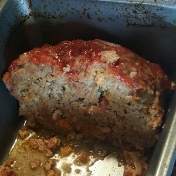

Tennessee Meatloaf

Better than your Mom's meatloaf
Description
This meatloaf receipe has been a family favorite for many generations and
something that I know you and your family will love. It is the type of recipe that you will pass down for
many gnerations. Be sure to follw the guidlines below, exactly as provided so that it will turn out perfectly.
Ingredients
Brown Sugar Glaze
- ½ cup ketchup
- ¼ cup brown sugar
- 2 tablespoons cider vinegar
Meatloaf
- cooking spray
- 1 onion, chopped
- ½ green bell pepper, chopped
- 2 cloves garlic, minced
- 2 large eggs, lightly beaten
- 1 teaspoon dried thyme
- 1 teaspoon seasoned salt
- ½ teaspoon ground black pepper
- 2 teaspoons prepared mustard
- 2 teaspoons Worcestershire sauce
- ½ teaspoon hot pepper sauce (such as Tabasco®)
- ½ cup milk
- ⅔ cup quick cooking oats
- 1 pound ground beef
- ½ pound ground pork
- ½ pound ground veal
Directions:
- Step 1
Combine ketchup, brown sugar, and cider vinegar in a bowl; mix well.
- Step 2
Preheat oven to 350 degrees F (175 degrees C). Spray two 9x5-inch loaf pans with cooking spray or line with aluminum foil for easier cleanup (see Cook's Note).
- Step 3
Place onion and green pepper in covered microwave container and cook until softened, 1 to 2 minutes. Set aside to cool.
- Step 4
In large mixing bowl, combine garlic, eggs, thyme, seasoned salt, black pepper, mustard, Worcestershire sauce, hot sauce, milk, and oats. Mix well. Stir in cooked onion and green pepper. Add ground beef, pork, and veal. With gloved hands, work all ingredients together until completely mixed and uniform.
- Step 5
Divide meatloaf mixture in half and pat half of mixture into each prepared loaf pan. Brush loaves with half of the glaze; set remainder of glaze aside.
- Step 6
Bake in preheated oven for 50 minutes. Remove pans from oven; carefully drain fat. Brush loaves with remaining glaze. Return to oven and bake for 10 minutes more. Remove pans from oven and allow meatloaf to stand for 15 minutes before slicing.